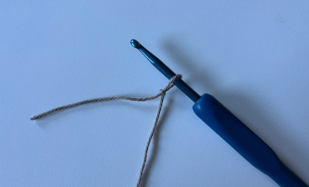

Gør dit udstyr klar
Læg dit starterkit frem, så du har det hele ved hånden: hæklenål, garn, målebånd, maskemarkører og stoppenål. Find også en rolig plads med godt lys.

Lav en startløkke
Begynd med at lave en løkke på garnet. Sno garnet rundt om dine fingre, og træk en løkke igennem med hæklenålen. Stram forsigtigt til, så løkken sidder fast på nålen – men ikke for stramt.
Hækl luftmasker (lm)
Før garnet over nålen og træk det igennem løkken. Gentag dette for at lave en kæde af luftmasker. Sørg for, at maskerne er nogenlunde ens i størrelse – det kommer med lidt øvelse.
Hold nål og garn rigtigt
Se hvordan du kan holde nål og garn på en måde, der føles naturlig. Du styrer spændingen med hånden, som holder garnet, mens den anden arbejder med nålen. Det er helt okay at prøve sig frem.
Lær fastmasker (fm)
Stik nålen ind i masken, slå garnet om, og træk det igennem. Nu har du to løkker på nålen. Slå garnet om igen og træk det igennem begge løkker. Sådan laver du en fastmaske.
Vend og hækl næste række
Når du når enden af rækken, laver du en luftmaske som vendemaske. Vend arbejdet og hækl videre i den modsatte retning. Det vises tydeligt på billedet.
Brug maskemarkører
Sæt en maskemarkør i første eller sidste maske på rækken. Det hjælper dig med at holde styr på, hvor runden begynder – især i cirkulære projekter eller mønstre med gentagelser.
Prøv et lille projekt
Vælg én af de opskrifter, der følger med kittet – fx en coaster eller en lille pung. Følg videoguiden og brug teknikkerne, du har lært. Billedet viser et eksempel på, hvordan projektet kan starte.
Hæft ender og afslut arbejdet
Når du er færdig, klipper du garnet og trækker det gennem den sidste løkke. Brug stoppenålen til at føre garnenden gennem maskerne, så den bliver usynlig og ikke går op.